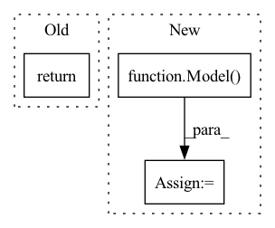

Pattern ID :19265
Before Change
import tensorflow as tf
assert isinstance(model, tf.keras.Model) // True
return
def test_example2(self):
batch_size = 16
lookback = 15After Change
from ai4water.datasets import mg_photodegradation
data, *_ = mg_photodegradation(encoding="le")
model = Model(
// define the model/algorithm
model=MLP(units=24, activation="relu", dropout=0.2),
// columns in data file to be used as input
input_features=data.columns.tolist()[0:-1],
// columns in csv file to be used as output
output_features=data.columns.tolist()[-1:],
lr=0.001, // learning rate
batch_size=8, // batch size
epochs=500, // number of epochs to train the neural network
patience=50, // used for early stopping
)
history = model.fit(data=data)
prediction = model.predict_on_test_data(data=data)
prediction = model.predict_on_test_data(data=data)
In pattern: SUPERPATTERN
Frequency: 8
Non-data size: 3
Instances Fragment ID: 62710172
Project Name: atrcheema/ai4water
Commit Name: ebb30cb4829cac0eea2397dbc35978a6dc2fc9e5
Time: 2023-02-08
Author: ather_abbas786@yahoo.com
File Name: tests/test_front_page_examples.py
M Class Name: TestFrontPage
N Class Name: TestFrontPage
M Method Name: test_example1(1)
N Method Name: test_example1(1)
M Parent Class: unittest.TestCase
N Parent Class: unittest.TestCase
M File Name: tests/test_front_page_examples.py
N File Name: tests/test_front_page_examples.py
M Start Line: 26
M End Line: 41
N Start Line: 24
N End Line: 47
Before Change
boxes, scores, classes = yolo_eval(self.yolo_model.output, self.anchors,
num_classes, self.input_image_shape, max_boxes = self.max_boxes,
score_threshold = self.score, iou_threshold = self.iou, letterbox_image = self.letterbox_image)
return boxes, scores, classes
def detect_image(self, image):
image = image.convert("RGB")After Change
outputs = Lambda(yolo_eval, output_shape=(1,), name="yolo_eval",
arguments={"anchors": self.anchors, "num_classes": len(self.class_names), "image_shape": self.model_image_size,
"score_threshold": self.score, "eager": True, "max_boxes": self.max_boxes, "letterbox_image": self.letterbox_image})(inputs)
self.yolo_model = Model( [self.yolo_model.input, self.input_image_shape], outputs)
@tf.function
def get_pred(self, image_data, input_image_shape):
out_boxes, out_scores, out_classes = self.yolo_model([image_data, input_image_shape], training=False) Fragment ID: 62710184
Project Name: ryanccc/yolo-series
Commit Name: 28e486ab2643b1a2084e0f2ef2812e1379bbbbfd
Time: 2021-08-18
Author: chenjl@augurit.com
File Name: nets/yolo.py
M Class Name: YOLO
N Class Name: YOLO
M Method Name: generate(1)
N Method Name: generate(1)
M Parent Class: object
N Parent Class: object
M File Name: nets/yolo.py
N File Name: nets/yolo.py
M Start Line: 58
M End Line: 97
N Start Line: 82
N End Line: 109
Before Change
def average(ws = [], p = []):
if not ws: return None
if not p: p=[1.0/len(ws) for _ in range(len(ws))]
return sum([wi*pi for wi,pi in zip(ws, p)])
def cos_sim(w1, w2):
return w1.cos_sim(w2)After Change
def average(ws = [], p = []):
if not ws: return None
if not p: p = [1.0 / len(ws) for _ in range(len(ws))]
res = Model() .to(device)
res.load_state_dict(modeldict_weighted_average([w.state_dict() for w in ws], p))
return res
Fragment ID: 62710181
Project Name: wwzzz/easyfl
Commit Name: d9f6bfad39b99f393082c4412c0561faa4bb3445
Time: 2021-08-27
Author: zzz510711928@gmail.com
File Name: utils/fmodule.py
M Class Name: AnonimousClass
N Class Name: AnonimousClass
M Method Name: average(2)
N Method Name: average(2)
M Parent Class:
N Parent Class:
M File Name: utils/fmodule.py
N File Name: utils/fmodule.py
M Start Line: 85
M End Line: 86
N Start Line: 120
N End Line: 123
Before Change
num_iterations=30,
refit=False
)
return
if __name__ == "__main__":
After Change
data = MtropicsLaos().make_regression(lookback_steps=1)
model = Model(
model={"RandomForestRegressor": {
"n_estimators": Integer(low=5, high=30, name="n_estimators", num_samples=10),
"max_leaf_nodes": Integer(low=2, high=30, prior="log", name="max_leaf_nodes", num_samples=10),
"min_weight_fraction_leaf": Real(low=0.0, high=0.5, name="min_weight_fraction_leaf", num_samples=10),
"max_depth": Integer(low=2, high=10, name="max_depth", num_samples=10),
"min_samples_split": Integer(low=2, high=10, name="min_samples_split", num_samples=10),
"min_samples_leaf": Integer(low=1, high=5, name="min_samples_leaf", num_samples=10),
}},
input_features=data.columns.tolist()[0:-1],
output_features=data.columns.tolist()[-1:],
cross_validator={"KFold": {"n_splits": 5}},
x_transformation="zscore",
y_transformation="log",
)
// First check the performance on test data with default parameters
model.fit_on_all_training_data(data=data)
print(model.evaluate_on_test_data(data=data, metrics=["r2_score", "r2"]))
// optimize the hyperparameters
optimizer = model.optimize_hyperparameters(
algorithm="bayes", // you can choose between `random`, `grid` or `tpe`
data=data,
num_iterations=20, // todo Fragment ID: 62710182
Project Name: atrcheema/ai4water
Commit Name: ebb30cb4829cac0eea2397dbc35978a6dc2fc9e5
Time: 2023-02-08
Author: ather_abbas786@yahoo.com
File Name: tests/test_front_page_examples.py
M Class Name: TestFrontPage
N Class Name: TestFrontPage
M Method Name: test_example4(1)
N Method Name: test_example4(1)
M Parent Class: unittest.TestCase
N Parent Class: unittest.TestCase
M File Name: tests/test_front_page_examples.py
N File Name: tests/test_front_page_examples.py
M Start Line: 84
M End Line: 98
N Start Line: 99
N End Line: 130
Before Change
concated.drop("gt", axis=1), concated["gt"]
)
return lgb_modelAfter Change
right_df["gt"] = 1
concated = pd.concat([left_df, right_df])
lgb_model = Model(
cat_validation=self.cat_validation,
encoders_names=self.encoders_names,
cat_cols=self.cat_cols,
model_validation=self.model_validation,
model_params=self.model_params,
)
train_score, val_score, avg_num_trees = lgb_model.fit(
concated.drop("gt", axis=1), concated["gt"]
)
self.metrics = {"train_score": train_score,
"val_score": val_score,
"avg_num_trees": avg_num_trees}
self.trained_model = lgb_model
class Model:
def __init__( Fragment ID: 62710183
Project Name: diyago/gan-for-tabular-data
Commit Name: 8aaf616129718e9c872e46ab966dba84e1ae19cf
Time: 2021-02-13
Author: iashrapov@gmail.com
File Name: src/tabgan/adversarial_model.py
M Class Name: AdversarialModel
N Class Name: AdversarialModel
M Method Name: adversarial_test(3)
N Method Name: adversarial_test(3)
M Parent Class:
N Parent Class:
M File Name: src/tabgan/adversarial_model.py
N File Name: src/tabgan/adversarial_model.py
M Start Line: 30
M End Line: 67
N Start Line: 35
N End Line: 66